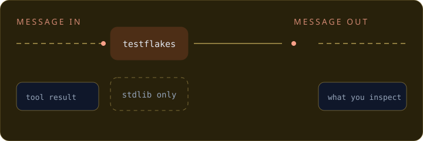

Install
consolepip install testflakes
Score
For each test it counts flips: the times its outcome changed from one run to the next one it appeared in.
score = flips / (runs - 1)0.0— never changed its mind: always passing, or always failing1.0— alternates every single run- a test that fails every time scores
0.0and is broken, not flaky, which is why
the failure count is printed next to the score
A skipped run is dropped from the sequence rather than counted as a change, so a temporarily disabled test does not look flaky. A test that is missing from a run (date-filtered, sharded) is skipped too.
Use
pythonfrom testflakes import flakiness, newly_failing, parse_runs
runs = parse_runs(["monday.xml", "tuesday.xml", "wednesday.xml"])
for stat in flakiness(runs, min_runs=3)[:10]:
print(f"{stat.node_id:50} {stat.score:.2f} failures={stat.failures}")
regressions = newly_failing(runs[-2], runs[-1])
consoletestflakes reports/*.xml --top 10 --min-runs 5 # the table above
testflakes reports/*.xml --json # for a dashboard
testflakes yesterday.xml today.xml --new # what broke, exit 1 if anything
--new is the CI gate: it prints the tests that fail today and were not failing before, and exits non-zero, so a flaky suite cannot hide a real regression behind a retry.
Limits
- It reads reports; it does not run, retry or quarantine anything.
- Order matters: a flip is measured between consecutive reports, so pass them oldest
first (reports/*.xml is already sorted by name if you name them by date).
- A test that is flaky but happens to pass in every collected report scores zero.
That is a measurement, not a bug: collect more runs (--min-runs exists for the opposite problem).
Development
consolepython -m venv .venv
.venv/bin/pip install -e ".[test]"
.venv/bin/pytest
The suite covers every line of the package (pytest --cov --cov-branch), and the examples in the docstrings run as tests through --doctest-modules.
License
MIT.
Other libraries here
One problem each, standard library only, no runtime dependencies.
- argrepair — turn a bad tool call into a message the model can act on
- backoff-headers — turn a rate-limit header into the exact time to wait
- columncheck — find the CSV defect before the pipeline does
- dir-digest — one hash for a directory tree, identical on every OS
- docanchor — catch every broken heading anchor in your docs
- envfile-diff — diff two .env files without printing the secrets
- fsync-replace — replace a file so a crash cannot leave it half-written
- header-date — HTTP dates parsed strictly, formatted correctly
- junit-merge — merge JUnit XML from every job into one honest report
- npm-semver — npm semver ranges, parsed the way npm parses them
- outputcap — keep a huge tool result out of the context window
- outputcap-cli —
- parse-size — byte sizes in and out, MB and MiB never confused
- path-containment — keep untrusted paths inside their directory
- redactscope — stop secrets in tool results before they reach the model
- runbudget — a per-run cost cap that warns before it stops
- tool-loop-guard — catch an agent repeating itself while it is still cheap
- toolcall-ledger — a hash-chained record of every tool call
- toolcircuit — stop retrying a tool that is down
- toolquota — client-side rate limits your agent loop can wait on
- wheeldeps — read a wheel's dependencies offline, markers included
- zip-deterministic — byte-identical archives, build after build